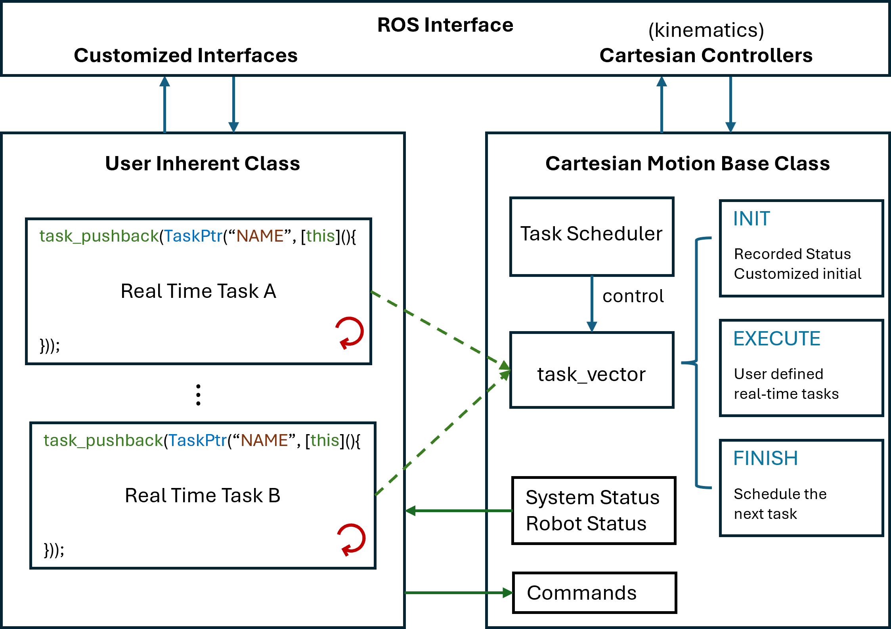

Dayuan Chen 「陈大元」
|
| CV |
Email |
Google Scholar |
| Github |
LinkedIn |
ORCID |
| ResearchGate |
|
I am a Ph.D. Candidate in Robotics at the Smart Robots Design Lab, Tohoku University, Japan, supervised by Prof. Yasuhisa Hirata.
Before that, I was working as a research assistant at the VBASE Lab, Harbin Institute of Technology, Shenzhen, supervised by Associate Prof. Xin Jiang. I received my M.Eng. degree with Mechanical Engineering from Shenzhen University, supervised by Associate Prof. Dengji Guo, and my B.Eng. degree in Mechanical Design & Automation from Dalian Minzu University.
Robotics researcher specializing in embodied AI, robot learning, and force-aware manipulation, with a focus on combining imitation learning, haptic feedback, and real-time control for long-horizon deformable object manipulation. Full-stack capability in building end-to-end robotic systems spanning teleoperation, policy learning, failure recovery, and deployment on real-world dual-arm platforms. First-author work in IEEE/ASME Transactions on Mechatronics and multiple international best-paper awards.
Email: leledeyuan [AT] gmail.com
|
|
|
Phase-Conditioned Imitation Learning with Autonomous Failure Recovery for Robust Deformable Object Manipulation
Dayuan Chen, Kai Tang, Yukuan Zhang, Kazuhiro Kosuge, Yasuhisa Hirata
IEEE/ASME Transactions on Mechatronics (T-Mech), 2026
webpage |
pdf |
abstract |
bibtex |
arXiv
This paper presents a phase-conditioned, force-aware framework for robust deformable object manipulation. Standard imitation learning policies such as Action Chunking with Transformers (ACT) rely on a Markovian assumption at inference, causing state aliasing when visually similar observations require contradictory actions and preventing autonomous recovery from execution failures. We address this with a closed-loop hierarchical architecture. A FiLM-conditioned ACT encoder modulates feature extraction based on the current task phase, enabling a single unified policy to produce phase-specific behaviors while sharing action dynamics across phases. A multi-modal phase predictor fusing visual, force, and pose feedback estimates the phase in real time, detecting contact failures that are invisible to vision alone and autonomously triggering recovery trajectories. The system is completed by a hybrid impedance controller for compliant execution and a haptic teleoperation interface for force-aware data collection. Ablation studies show that FiLM-based modulation significantly outperforms both unconditioned and token-level conditioned baselines, and t-SNE analysis confirms that FiLM induces well-separated, phase-specific feature representations. Validated on hanging and removing a T-shirt with dual arms, the closed-loop system improves the hanging success rate from 56% to 87% through autonomous error recovery.
@ARTICLE{11574903,
author={Chen, Dayuan and Tang, Kai and Zhang, Yukuan and Kosuge, Kazuhiro and Hirata, Yasuhisa},
journal={IEEE/ASME Transactions on Mechatronics},
title={Phase-Conditioned Imitation Learning With Autonomous Failure Recovery for Robust Deformable Object Manipulation},
year={2026},
volume={},
number={},
pages={1-9},
keywords={Modeling;Force;Robots;Visualization;Clothing;Training;Contacts;Impedance;Films;Motion pictures;Closed-loop system;conditioned policy;deformable object manipulation (DOB);failure recovery;haptic feedback teleoperation;imitation learning (IL)},
doi={10.1109/TMECH.2026.3698472}
}
|
|

|
CMB: A C++ Library for Real-Time Cartesian Control Architectures of Robotic Manipulation in ROS 2
Dayuan Chen, Yasuhisa Hirata
Open source project, 2026
pdf |
abstract |
bibtex |
code
Controlling robotic manipulators in the real world often requires translating intuitive Cartesian commands (e.g., moving a tool in 3D space) into complex joint angle trajectories. While achieving motion safety with the environment requires real-time compliance feedback, which is notoriously difficult to achieve on robotics systems, especially industrial robots, that are limited to standard position or velocity control interfaces.
A typical robotic manipulation task consists of a sequence of dynamic sub-tasks. For example, a contact-rich "pick-and-place" operation might involve a rapid, rough approach to a target, followed by precise, visually-guided alignment, and finally, a compliant grasping motion. Ensuring uninterrupted, real-time control across these transitioning phases is technically challenging. Therefore, developing a control architecture that provides a real-time, sequential, and flexible task-execution paradigm is crucial for advanced robotics research.
Cartesian Motion Base (CMB) is an extensible C++ library for the Robot Operating System 2 (ROS 2) that addresses this challenge. CMB provides a robust Finite State Machine (FSM) architecture that manages sequential manipulation sub-tasks while maintaining real-time response. By seamlessly integrating with existing ROS 2 cartesian_controllers, which generate joint commands from Cartesian targets and force/torque feedback (utilizing wrist-mounted sensors and compliance controllers), CMB allows users to intuitively program single- or multi-arm robot systems. Researchers and engineers can easily inherit from the CMB base class to rapidly design, deploy, and scale their own custom, complex manipulation sequences.
@software{dayuan_2026_18766411,
author = {Dayuan Chen, Yasuhisa Hirata},
title = {leledeyuan00/cartesian\_motion\_base: Release of
v0.1.2
},
month = feb,
year = 2026,
publisher = {Zenodo},
version = {v0.1.2},
doi = {10.5281/zenodo.18766411},
url = {https://doi.org/10.5281/zenodo.18766411},
swhid = {swh:1:dir:409d5926d1585d2d769cbae44f71d08de02c1263
;origin=https://doi.org/10.5281/zenodo.18616704;vi
sit=swh:1:snp:ce4c9c7ca1482194e5697bd4a9fc794b6b35
31ac;anchor=swh:1:rel:ee17d04b4607bebac29a52c8883c
45952bc72508;path=leledeyuan00-cartesian\_motion\_ba
se-cf21d36
},
}
|
|
|
An Incremental Hybrid Impedance Algorithm for Stable Force—Position Control of Elastic Materials
Yukuan Zhang, Dayuan Chen, Weizan He, Alberto Elí Petrilli Barceló, Jose Victorio Salazar Luces, Yasuhisa Hirata
IEEE Transactions on Automation Science and Engineering (T-ASE), 2026
abstract |
bibtex
This study introduces a new force-position impedance control strategy tailored for robotic systems engaged in the manipulation of elastic garments. Our approach is innovative for incorporating external force and impedance control within an incremental trajectory generation framework. This method allows for dynamic adjustment to prevent over-deformation and potential damage during garment handling, enabling the fabric to deform to desired states and follow intended trajectory trends without compromising textile integrity. By utilizing external forces in an adaptive, incremental manner, we offer a nuanced solution for expected garment manipulation. Our strategy demonstrates the feasibility of detailed manipulation tasks in industrial settings, bridging the gap between simulated environments and real-world operations. This effort underscores the importance of automation in enhancing textile handling processes, focusing on practical applications rather than theoretical advancements. Note to Practitioners—This paper presents a hybrid force-position impedance control approach for robotic garment manipulation, aimed at industrial tasks like dressing, hanging, and fabric handling. Our method dynamically adjusts to fabric deformation and external forces, ensuring expected garment manipulation without damage. It enhances the adaptability of robotic systems in real-world garment handling, where fabric properties and external conditions vary. However, challenges remain in fine-tuning the control of force variables to achieve optimal garment deformation. Future research will focus on exploring the physical properties of garments in real-world scenarios and generating appropriate deformation forces to meet the demands of more complex tasks. This will help to improve the system's versatility for a broader range of industrial applications.
@ARTICLE{11227030,
author={Zhang, Yukuan and Chen, Dayuan and He, Weizan and Barceló, Alberto Elías Petrilli and Luces, Jose Victorio Salazar and Hirata, Yasuhisa},
journal={IEEE Transactions on Automation Science and Engineering},
title={An Incremental Hybrid Impedance Algorithm for Stable Force—Position Control of Elastic Materials},
year={2026},
volume={23},
number={},
pages={3134-3144},
keywords={Fabrics;Trajectory;Robots;Clothing;Deformation;Impedance;Automation;Robot kinematics;Real-time systems;Learning systems;Manipulator motion-planning;industrial control;force control},
doi={10.1109/TASE.2025.3629136}
}
|
|
|
Multi-Critic Reinforcement Learning for Garment Handling: Addressing Unpredictability in Temporal-Phase Continuous Contact Tasks
Yukuan Zhang, Dayuan Chen, Weizan He, Alberto Elí Petrilli Barceló, Jose Victorio Salazar Luces, Yasuhisa Hirata
IEEE Transactions on Automation Science and Engineering (T-ASE), 2025
abstract |
bibtex
This research unveils a novel Multi-Critic Reinforcement Learning framework designed to navigate the multifaceted challenges associated with multi-phased garment handling tasks, notably marked by persistent contact and erratic deformations between textiles and solid bodies. These tasks, ubiquitous in domestic and industrial environments, encompass activities such as dressing, fabric printing, and pressing, and are complicated by the unpredictability of textile states and the intricacy of devising control strategies. Our reinforcement learning model combines multiple time-sequenced Critic networks with traditional Deep Deterministic Policy Gradient (DDPG) techniques, thereby equipping the system to adapt to the diverse effects of fabric distortions throughout various stages. The effectiveness of this approach is demonstrated through a multi-phase pre-printing operation and further validated by real-world implementations, showing significant improvements in coverage and a substantial reduction in wrinkle formation, with its versatility further confirmed by a complex vertical dressing task. We anticipate future applications of this framework in a range of complex problems, not just garment handling. The model used in this paper can be found at https://github.com/jkk5454/multiddpg.git. Note to Practitioners—This paper addresses garment handling challenges where deformable clothes are in continuous contact with objects, such as pulling a T-shirt over a print bench before silk printing and dressing in a vertical hanger. Unlike previous research focusing on handling clothes in the air (like folding or unfolding), we tackle the complexities introduced by continuous contact, which can alter a garment's shape and affect the task. We segment these tasks into distinct phases and employ Multi-Critic Reinforcement Learning to evaluate each phase, enabling us to predict their overall impact. Specifically, we divide a task like pulling a T-shirt over a workbench of the pre-printing tasks in garment printing into three phases and use Multi-Critic DDPG to generate control trajectories for a flat, correctly positioned surface. The practical applicability of our algorithm was further validated through experiments involving the dragging task on a realistic printing board and the vertical dressing task using an ironing board. This approach aims to facilitate garment handling tasks like dragging, dressing, and ironing, involving multiple phases and continuous contact with obstacles. However, the current simulation environment significantly differs from the real world, challenging policy transfer. Future work will concentrate on narrowing this simulation-to-reality gap.
@ARTICLE{10833866,
author={Zhang, Yukuan and Chen, Dayuan and He, Weizan and Petrilli Barceló, Alberto Elí and Salazar Luces, Jose Victorio and Hirata, Yasuhisa},
journal={IEEE Transactions on Automation Science and Engineering},
title={Multi-Critic Reinforcement Learning for Garment Handling: Addressing Unpredictability in Temporal-Phase Continuous Contact Tasks},
year={2025},
volume={22},
number={},
pages={10741-10752},
keywords={Clothing;Printing;Reinforcement learning;Training;Measurement;Trajectory;Deformation;Complexity theory;Fabrics;Automation;Manipulator motion-planning;learning system;simulation;robots},
doi={10.1109/TASE.2025.3527003}
}
|
|
|
SIS: Seam-Informed Strategy for T-Shirt Unfolding
Xuzhao Huang, Akira Seino, Fuyuki Tokuda, Akinari Kobayashi, Dayuan Chen, Yasuhisa Hirata, Norman C. Tien, Kazuhiro Kosuge
IEEE Robotics and Automation Letters (RA-L), 2025
abstract |
bibtex
Seams are information-rich components of garments. The presence of different types of seams and their combinations helps to select grasping points for garment handling. In this letter, we propose a new Seam-Informed Strategy (SIS) for finding actions for handling a garment, such as grasping and unfolding a T-shirt. Candidates for a pair of grasping points for a dual-arm manipulator system are extracted using the proposed Seam Feature Extraction Method (SFEM). A pair of grasping points for the robot system is selected by the proposed Decision Matrix Iteration Method (DMIM). The decision matrix is first computed by multiple human demonstrations and updated by the robot execution results to improve the grasping and unfolding performance of the robot. Note that the proposed scheme is trained on real data without relying on simulation. Experimental results demonstrate the effectiveness and generalization ability of the proposed strategy.
@ARTICLE{11017654,
author={Huang, Xuzhao and Seino, Akira and Tokuda, Fuyuki and Kobayashi, Akinari and Chen, Dayuan and Hirata, Yasuhisa and Tien, Norman C. and Kosuge, Kazuhiro},
journal={IEEE Robotics and Automation Letters},
title={SIS: Seam-Informed Strategy for T-Shirt Unfolding},
year={2025},
volume={10},
number={7},
pages={7342-7349},
keywords={Grasping;Clothing;Feature extraction;Robots;Image segmentation;YOLO;Self-supervised learning;STEM;Robot motion;Planning;Perception for grasping and manipulation;bimanual manipulation;manipulation planning},
doi={10.1109/LRA.2025.3574966}
}
|
|
|
A Human-Guided Approach for Garment Manipulation Tasks by Using Real-Time Body Tracking and Impedance Control
Dayuan Chen, Zhenyu Liao, Alberto Elías Petrilli-Barceló, Jose Victorio Salazar Luces, Yasuhisa Hirata
2024 International Conference on Advanced Robotics and Mechatronics (ICARM)
abstract |
bibtex
With the development of robotics, people contrive to use robot manipulators to deal with many industrial tasks and daily missions. However, the manipulators still face challenges in dynamic environments, especially when this environment involves dealing with deformable objects like picking up one T-shirt from a stack of clothes or arranging a cable from messy wiring. To manipulate the deformable objectives, many researchers proposed two main methods, data-driven approaches and human-involved approaches. Human-involved methods are more universal to all environments, where data-driven approaches might not be useful if they were not trained in this environment. In terms of human-involved methods, up to now, most of the methods can achieve tasks with fixed human-robot interaction, like humans handling the manipulators to move some objects. During this task, without human motion, the manipulators won't move. The fixed human-robot interaction way limits the robustness of the system to achieve tasks when some disturbances occur. In this paper, we proposed a novel human-involved manipulator control paradigm, this paradigm allows both users and manipulators can smoothly change their interaction ways based on the tasks processing and environments' changes. Using this method, persons collaborate with manipulators only at the necessary timing, like when the task almost fails and needs persons to intervene to correct this error. When the task goes well, the person and manipulator do their task. All the human-robot interaction modes will be adaptive switched by the system automatically.
@INPROCEEDINGS{10715750,
author={Chen, Dayuan and Liao, Zhenyu and Petrilli-Barceló, Alberto Elías and Luces, Jose Victorio Salazar and Hirata, Yasuhisa},
booktitle={2024 International Conference on Advanced Robotics and Mechatronics (ICARM)},
title={A Human-Guided Approach for Garment Manipulation Tasks by Using Real-Time Body Tracking and Impedance Control},
year={2024},
volume={},
number={},
pages={25-30},
keywords={Wiring;Service robots;Human-robot interaction;Process control;Switches;Manipulators;Trajectory;Timing;Collision avoidance;Manipulator dynamics},
doi={10.1109/ICARM62033.2024.10715750}
}
|
|
|
Puttybot: A sensorized robot for autonomous putty plastering
Zhao Liu, Dayuan Chen, Mahmoud A. Eldosoky, Zefeng Ye, Xin Jiang, Yunhui Liu, Shuzhi Sam Ge
Journal of Field Robotics, 2024
pdf |
abstract |
bibtex
Plastering is dominated manually, exhibiting low levels of automation and inconsistent finished quality. A comprehensive review of literature indicates that extant plastering robots demonstrate a subpar performance when tasked with rectifying defects in the transition area. The limitations encompass a lack of capacity to independently evaluate the quality of work or perform remedial plastering procedures. To address this issue, this research describes the system design of the Puttybot and a paradigm of plastering to solve the stated problems. The Puttybot consists of a mobile chassis, a lift platform, and a macro/micromanipulator. The force-controlled scraper parameters have been calibrated to dynamically modify their rigidity in response to the applied putty. This strategy utilizes convolutional neural networks to identify plastering defects and executes the plastering operation with force feedback. This paradigm's effectiveness was validated during an autonomous plastering trial wherein a large-scale wall was processed without human involvement.
@article{https://doi.org/10.1002/rob.22351,
author = {Liu, Zhao and Chen, Dayuan and Eldosoky, Mahmoud A. and Ye, Zefeng and Jiang, Xin and Liu, Yunhui and Ge, Shuzhi Sam},
title = {Puttybot: A sensorized robot for autonomous putty plastering},
journal = {Journal of Field Robotics},
volume = {41},
number = {6},
pages = {1744-1764},
keywords = {convolutional neural network, impedance control, interior finishing, plastering robot},
doi = {https://doi.org/10.1002/rob.22351},
url = {https://onlinelibrary.wiley.com/doi/abs/10.1002/rob.22351},
eprint = {https://onlinelibrary.wiley.com/doi/pdf/10.1002/rob.22351},
abstract = {Abstract Plastering is dominated manually, exhibiting low levels of automation and inconsistent finished quality. A comprehensive review of literature indicates that extant plastering robots demonstrate a subpar performance when tasked with rectifying defects in the transition area. The limitations encompass a lack of capacity to independently evaluate the quality of work or perform remedial plastering procedures. To address this issue, this research describes the system design of the Puttybot and a paradigm of plastering to solve the stated problems. The Puttybot consists of a mobile chassis, a lift platform, and a macro/micromanipulator. The force-controlled scraper parameters have been calibrated to dynamically modify their rigidity in response to the applied putty. This strategy utilizes convolutional neural networks to identify plastering defects and executes the plastering operation with force feedback. This paradigm's effectiveness was validated during an autonomous plastering trial wherein a large-scale wall was processed without human involvement.},
year = {2024}
}
|
|
|
Untangling Multiple Deformable Linear Objects in Unknown Quantities With Complex Backgrounds
Xuzhao Huang, Dayuan Chen, Yuhao Guo, Xin Jiang, Yunhui Liu
IEEE Transactions on Automation Science and Engineering (T-ASE), 2023
abstract |
bibtex
The manipulation of deformable objects, especially deformable linear objects (DLOs), represents an open challenge in robotics. The keys to solving the problem are accurately recognizing the topological model describing the entwined state of DLO(s) and a manipulation strategy based on it. The situation becomes more challenging in practical applications since the DLO(s) may be placed under complex and unencountered environments, making distinguishing between the targets and the background difficult. In addition, with the information obtained from a sensor system with a limited field of sense, a robot has to treat the encountered DLO(s) as multiple ones of an unknown quantity. This paper proposes a solution based on deep learning techniques for these complicated scenarios. The approach can derive a topological model describing the entangled structure of single or multiple DLOs. Based on the model, we proposed a strategy for untangling the DLO(s), considering both the possible self-tangling in one DLO and the tangling between multiple DLOs. The strategy ensures that the entangled DLO(s) can be arranged to be the neatest state given a limited field of view. The feasibility and effectiveness of the proposed solution were verified by untangling experiments utilizing a dual-arm robot system. Even if the exact quantity of the DLO(s) is unknown, the robots can still untangle the DLO(s). Moreover, the proposed approach performed robustness to unfamiliar background textures, which is preferable in practical applications. Dataset used in this paper can be found at https://github.com/lancexz/dlos-dataset. Note to Practitioners—This article proposes an automatic solution for untangling an unknown quantity of DLO(s) using robots. Issues concerned with complex backgrounds, an unknown quantity of DLOs, and limits of field of view, which are easily encountered in practical applications, are solved. Experiments demonstrated the feasibility and robustness of the approach in different scenarios. Potential applications for the proposed method include pipeline bin-picking tasks, rope-like object manipulation in household robots, and cable assembly in industrial areas. Moreover, the topological state recognition process can also be utilized in knot-tying studies and producing datasets. As the current system can not deal with scenes where DLO segments or crossings severely overlap, practitioners should integrate real-time tracking, deformation control method, and unqualified cases detection to avoid the appearance of such cases during manipulation. Future works should also consider the rebound caused by the elastic potential of DLOs.
@ARTICLE{10026277,
author={Huang, Xuzhao and Chen, Dayuan and Guo, Yuhao and Jiang, Xin and Liu, Yunhui},
journal={IEEE Transactions on Automation Science and Engineering},
title={Untangling Multiple Deformable Linear Objects in Unknown Quantities With Complex Backgrounds},
year={2024},
volume={21},
number={1},
pages={671-683},
keywords={Topology;Planning;Deep learning;Image segmentation;Grasping;Complexity theory;Automation;Automated unknotting;deep learning;deformable object manipulation;grasping planning},
doi={10.1109/TASE.2023.3233949}
}
|
|
|
Development of a Vision-Based Robotic Manipulation System for Transferring of Oocytes
Shu Miao, Dayuan Chen, Qiang Nie, Xin Jiang, Xulin Sun, Jianjun Dai, Yunhui Liu
2021 IEEE/RSJ International Conference on Intelligent Robots and Systems (IROS)
abstract |
bibtex
Embryos/oocytes vitrification is an essential cryopreservation technique in IVF (in vitro fertilization) clinics. The reliable and effective transferring of embryos/oocytes is crucial to the subsequent steps in the whole procedure of vitrification. After each transferring, the straw needs to be replaced with a new one. Due to the uncertainties in the fabrication and installation, the exact knowledge of the kinematic model of the straw is usually unknown, and the relationship between the microscope and the straw is also unknown without calibration beforehand. In such situation, automatically transferring the oocytes from micropipette to the narrow tip of straw (0.7mm) is very challenging. In this paper, a new vision-guided robotic system is developed to automate the transferring of the oocyte without calibration. To this end, the unknown depth information is estimated then compensated by constructing a deep vision network through microscope image, and an approximate Jacobian control algorithm is also proposed to servo control the end tip of the uncalibrated straw to contact the micropipette with the vision feedback. After that, the oocyte is automatically transferred from the micropipette to the straw to finalize the task. The stability of the closed-loop control system is rigorously proved with Lyapunov methods, and the effectiveness of the developed robot is validated in experiments.
@INPROCEEDINGS{9636732,
author={Miao, Shu and Chen, Dayuan and Nie, Qiang and Jiang, Xin and Sun, Xulin and Dai, Jianjun and Liu, Yun-Hui and Li, Xiang},
booktitle={2021 IEEE/RSJ International Conference on Intelligent Robots and Systems (IROS)},
title={Development of a Vision-Based Robotic Manipulation System for Transferring of Oocytes},
year={2021},
volume={},
number={},
pages={7470-7475},
keywords={Jacobian matrices;Uncertainty;Microscopy;Vitrification;Approximation algorithms;Calibration;Reliability},
doi={10.1109/IROS51168.2021.9636732}
}
|
Website template from here
|
|
{kind=link}